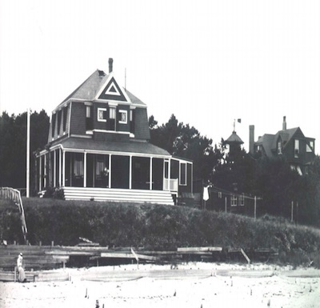

The history of the Wianno Yacht Club really starts with the history of yacht racing in our area quite a while before there was an organized club. There is an item in the
reporting a Regatta and Picnic at Oyster Bay, Cotuit Port, on July 5, 1875, in which the boats raced
under the Boston Yacht Club Racing Rules of 1874. And another telling of the Sailing Regatta off Centerville Wharf on July 4, 1876, in connection with the Campground’s celebration of the United States Centennial. The first mention of racing off Wianno is the report of a race on July
19, 1881, in which Wilton Crosby won the first prize of twelve dollars and Clifford Lovell the eight dollar second prize, not inconsiderable sums for the day.

“The Onion,” WYC 1st Clubhouse, circa 1900, from the archives of Townsend Hornor
On July 4, 1882, that year’s
regatta saw 17 boats in the first race, 14 in the second, coming from Centerville, Cotuit
and as far away as Waquoit. During 1884 a pier was built at the corner of Sea View
Avenue and Wianno Avenue, looking very much like the one built ten years earlier in
front of the newly completed Cotocheset House, now the Wianno Club. All of this took
place in the great flush of prosperity that saw Bostonians and Pittsburghers discovering
the Cape as a pleasant and quiet place to spend the summer.
In 1885 the Wianno Yacht Club was formally organized, and in 1891 there were regular
races starting off the Club pier and the Cotocheset House. The Yacht Club had a
handsome club house located at the intersection of Sea View Avenue and Wianno
Avenue, known locally as the “Red Onion,” with its square red roof, surrounding open
veranda and prominent flagpole. Records show the first Annual Regatta was held in
1900, although we are not told the exact date. Eight boats were entered including the
HECTOR, FLIRT, MARY ANNE, JULIA, KESTREL, BUCKEYE, and CICADA, the
overall winner, owned by Francis Prescott, who was also the regatta chairman. On
October 2, 1901, the Yacht Club was finally incorporated.
Up until this time, the Club’s anchorage and the focus of most sailing activity had been at
East Bay, which had a modest but natural navigable entrance. Although boatbuilding as a
“The Onion,” WYC 1st Clubhouse, circa 1900, from the
archives of Townsend Hornor
of Townsend Hornor
business began in the area where the present Crosby shops are located at least as early as
1817, West Bay was a landlocked body of water entered through the Cotuit channel and
the Narrows into North Bay. The present entrance was known as the Wading Place,
where a shallow tidal creek gave easy access at low tide to Grand Island, now Oyster
Harbors, with its supplies of firewood, marsh hay and cranberries. In about 1900, the
first cut was dredged, protected by wooden jetties, and the first bridge to Little Island was
built, a wood double draw structure located about where the present bridge, the third
Grand Island Bridge, now stands. And so began the very gradual shift of racing activity
towards its present site. It is interesting to remember that it was only the shoaling off the
Wianno Club caused by the 1944 hurricane that ended the practice of starting most Senior
races at that location.
Early in 1916 several officers and members of the Wianno Yacht Club joined together to
form a new corporation, the Wianno Club, and proceeded to assemble abutting waterfront
properties surrounding and including the Cotocheset House. Later that same year, the
Wianno Club and the Wianno Yacht Club merged. For the next thirty years, the Yacht
Club operated as an active department of the Wianno Club, although it retained its
original Charter, and according to our most senior members “yachting” remained the
dominant Club activity for a very long time. As a matter of fact, the Yacht Club
experience was so much a part of the lives of the Wianno Club’s founders that, for
several months following incorporation, they debated whether the new executive officer’s
title ought to be “commodore” or “president,” eventually settling upon the latter.
At about this time we begin to find the names of the officers in the Club records; previous
lists show only Regatta Committees. The first recorded commodore was William B.H
Dowse, who held the job from 1913 to 1915, and owned what is now the Town Beach at
East Bay, Dowse’s Point. His house was the site of the present town bathhouse, a
foundation made available by the total destruction of his house during the 1944 hurricane.
The next commodore was Edward C. Crossett, father of Mrs. George R. Rowland who
now lives on Fox Island in Osterville. In the fall of 2008 she graciously granted an
interview. A few of her recollections are included in this Club History. Commodore
Crossett served from 1916 to 1924 and is well-remembered for many things, including
the RUTH, a handsome 26’ lapstrake launch captained by Thornton Adams, which
ferried countless crews from the Club pier out to their boats that had been sailed to the
starting area by their professional skippers.
In the early 1920’s, reflecting the continuing development of West Bay, and South Bay as
its eastern lobe was then called, the Club started using a pier at the entrance to West Bay,
on the property at the end of Sea View Avenue later owned for many years by Norman A.
MacColl. At about this time the Wianno Dredging Company was formed by a group of
local residents to purchase and operate a wooden, electrically powered dredge that started
in the outside channel, dredged through the bays and up into the end of Eel River, making
beaches as well as channels, and ended its life as a derelict on the south side of Little
Island, where it remained until after World War II. Perhaps enticed by the improvements
to these inner waterways, perhaps motivated by damaging coastal storms, in 1927 the
Wianno Club obtained the property where the present clubhouse is situated, and the
following year had a pier built there.
The previous landowner was Henry B. Day, a prominent Boston area businessman with
major real estate investments along the Osterville waterfront. Many families purchased
their original properties from him, and throughout the first half of the 20th century his
influence served to build and bind the Wianno community. He was a sailor and very
active member of the Wianno Yacht Club, he became a principal founder and officer of
the Wianno Club, and through the years he never lost his enthusiasm for yachting, which
was chief among the sporting interests shared by so many who chose to make their
summer homes in Osterville during those years. In about 1930, the clubhouse that had
been built for the Osterville Yacht Club, a short-lived organization that became an early
depression victim, was purchased and moved down the road from its original site near
Cockachoiset Lane. On the Fourth of July, 1931, the new clubhouse was officially
opened at twelve o’clock noon with a buffet luncheon and the Osterville Silver Coronet
Band playing!
Wianno Juniors and Wianno Seniors were raced, the Nantucket Sound Star Fleet existed
for a number of years, Lawley 110’s were tried from about 1939 until perhaps 1950, and
the Club flourished with a morning and sunset gun, fired by a yachtmaster in starched
khakis. The races were run by the commodores, fleet captain, and race committee, all in
appropriate uniform, and the outside committee boat was the BOOKIE, built and manned
by Chet Crosby. Starting in 1924, Wianno Senior races to and during the Edgartown and
Nantucket regattas, then of almost equal size, were the high points of the season, along
with the annual Skippers’ Race back from Edgartown. The paid professional skippers
raced for blood to see who really was on top, competing for prize money and bragging
rights. For this race boat owners were neither encouraged nor invited to participate, and
had to find their own way back to the mainland! Activity of a sort continued during
World War II, mainly in Junior boats. The clubhouse was open evenings for the use of
soldiers stationed along the West Bay, where several companies of early amphibious
troops were camped in tents, destined for North Africa and the Pacific. The prime mover
for most of this period was John West Hornor, commodore from 1929 to 1939, and acting
commodore during the war years, for whom the present committee boat is named. Mrs.
Rowland, who was born the year the Wianno Club was founded, remembered
Commodore Hornor for his booming voice and unbridled enthusiasm, saying he was “a
great sport and a wonderful man.”
In 1946, James G. Hinkle returned home from the Navy and was asked to become
commodore. The Wianno Club had by that time grown tremendously, with an increasing
array of activities, especially tennis and golf, which were seen by a number of sailors to
have diminished gradually the stature and influence of yachting. Under the new
Commodore’s leadership, and with a view to restoring self-governance to the original
organization, the Boards of both Clubs agreed that the Yacht Club would separate from
the Wianno Club and be allowed to lease the West Bay property, a situation that exists
today. From that time forward both Clubs would fly the original Wianno Yacht Club
burgee, symbolizing the high value placed by the entire community upon its shared
yachting heritage, decades of camaraderie, friendship, and countless common interests.
Commodore Hinkle purchased a war surplus Navy launch, appropriately named DUMBO
reflecting her girth and color, that served as the race committee boat for many years. And
so the early post-war years passed, with the members taking an ever more active role in
the Club’s operations, a beneficial trend that has continued ever since.
The racing fleet has since the late 1940’s been in a continuous state of change with the
exception of the 25’ Wianno Seniors. The first 14 were built in 1914, and today they are
one of the oldest continuously raced classes anywhere. Henry B. Day owned #2,
WENDY, and his name appears in the sailing results for decades. Mrs. Rowland recalled
many happy memories sailing her family’s Wianno Senior TOMBOY with professional
skipper Joe Daniels, often being so wet following races that she’d just jump over the side
as they passed her family’s property and swim home. The first 159 boats (through 1976)
were of wood, and they formed a very active sailing class. In 1928, for example, there
were 54 Seniors on the Club list, with 48 racing in two divisions; 28 went that year to the
2d Annual Nantucket Regatta. Today there are typically 6-10 boats at the starting line,
reflecting the smaller number of Seniors in the water and also the fact that several other
clubs race them that did not do so in the earlier years. In 1984 an effort was started to
design and build a fiberglass Senior that would compete evenly with the wooden boats,
and in 1986 the first fiberglass boats were launched. A total of 12 were built between
1986 and 1990, making a total of 171 Seniors built by Crosby Yacht. After a ten-year
hiatus, fiberglass Seniors (hulls and decks) are now being constructed by Shaw Yacht in
Thomaston, Maine. Owners are having the finish work performed either by Shaw Yacht
or Crosby Yacht.
The Wianno Junior, a 16’ Marconi knockabout designed and built by Crosby Yacht, was
the Club’s second one-design racing class. Between 1922 and 1961 a total of 77 were
built. According to Mrs. Rowland her father purchased one of the first of these, which
she raced enthusiastically in West Bay, saying “I was plopped into #7 when I was
seven…they were lots of fun.” Very popular as a beginner boat, in 1941 there were 46
Wianno Juniors racing in 2 classes, but they were iron fastened, with an old-fashioned rig
and high maintenance costs. By the late 1960’s they were no longer raced, and today very
few exist.
Other classes that were tried included the International Stars, 110s, 210s, Lightnings, and
Blue Jays very briefly, Lasers, Beetle Cats that come and go at regular intervals, and
Enterprise/404s, used for ten years in the teaching program. In the larger size, a fleet of
Rhodes 19s flourished in the late 1990s, but interest in the fleet has since diminished.
Fast Cats (built by Chester A. Crosby & Sons) have replaced Rhodes 19s in the Junior
Sailing Program. In the smaller size, we have International Optimist Dinghies that have
proven most satisfactory for beginner instruction, and Club/Collegiate 420’s, a very
popular advanced trainer/racer that is used at many clubs. Our fleet of cruising boats,
almost non-existent in 1946, has grown to respectable numbers; sailing rather than racing
appeals more to this group.
The dynamics of one-design classes continue, and every couple of years something new
comes on the scene. Recently we have reached back into history with the arrival of a few
Herreshoff 12 1/2s, and forward with the Joel White modification of that design in the
Haven 12 1/2, a slightly beamier, centerboard version of the older keel boat. In 2005
many members purchased Vanguard 15s, and this fleet has grown to more than a dozen.
The fleet races each Saturday morning and on every other Wednesday evening. The
fleet’s championship trophy is named after Commodore George P. Cronin, Jr.
The most dramatic event in the last few years was the devastating fire on the night of 10
December 2003 that totally destroyed several boat storage sheds at Crosby Yacht and an
adjacent one at Oyster Harbors Marine. A total of 18 wooden Seniors and three fiberglass
Seniors were totally destroyed along with at least four wooden Havens and a number of
other wood and fiberglass power and sailboats. The strength of the Wianno Senior Class
was sorely tested by these losses, and came through at least as strong as ever. Several
older wooden Seniors on the market were quickly purchased and totally rebuilt, and the
maximum number of new fiberglass boats that could be built in 2004 were ordered and
trickled out to the starting line during the summer. By the end of the season there were
about as many boats racing as in the previous year. Subsequent production of fiberglass
boats continues slowly to fill the voids. By late spring of 2005 both yards had erected
replacement sheds, and the following year the fleet demonstrated its resiliency, as almost
every family who had lost a boat purchased a new Senior or rebuilt an old one.
Mrs. Rowland recalled that when she was a youngster “Prize Night” was always
perceived as the best Club event of the summer “…when the flag officers would dress in
their navy blue and white flannels, and all the children and their parents would fill the
Ballroom, each youngster walking up the center aisle to receive a prize and a handshake
when his or her name was called. It was very nice for the little people…they thought
they were something!” They were and still are the leading focus of the Yacht Club’s
ongoing mission. For decades we have run a growing program teaching children to sail,
and to race. Open to non-members as well as members, it has turned out a large number
of kids who will enjoy sailing the rest of their lives, many who have become very good
competitive sailors, and a steady few who move up to become excellent junior
instructors. From having run some of the earliest Intercollegiate Regattas in the 1930s,
we participate today in Southern Massachusetts Sailing Association interclub
championship series and other class events, sending crews as far as Marblehead and
Marion and regularly hosting events at home. As a contribution to encourage youth
sailing in our Town the Yacht Club’s “B Fleet” of 420s was loaned every spring for
twenty years to the Barnstable High School Sailing Team. Through the Sailing Education
Foundation, the Club continues to provide financial assistance so that the BHS Sailing
Team can work towards purchasing their own fleet and continue to thrive. Our schedule
is a busy one, with something going on almost every day from mid-June to Labor Day.
We are blessed with a steady stream of hard-working officers, many dedicated volunteers
and a staff of wonderful professionals who set the tone that makes our Club as pleasant
and vibrant as it is today
Originally written by Townsend Hornor prior to 1981 and recently updated by Robert Frazee.